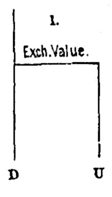
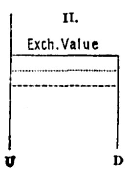
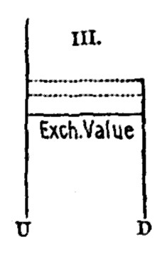

Chapter 17: Of Value¶
17.1 § 1. Definitions of Value in Use, Exchange Value, and Price¶
It is evident that, of the two great departments of Political Economy, the production of wealth and its distribution, the consideration of Value has to do with the latter alone; and with that only so far as competition, and not usage or custom, is the distributing agency.
The use of a thing, in political economy, means its capacity to satisfy a desire, or serve a purpose. Diamonds have this capacity in a high degree, and, unless they had it, would not bear any price. Value in use, or, as Mr. De Quincey calls it, teleologic value, is the extreme limit of value in exchange. The exchange value of a thing may fall short, to any amount, of its value in use; but that it can ever exceed the value in use implies a contradiction; it supposes that persons will give, to possess a thing, more than the utmost value which they themselves put upon it, as a means of gratifying their inclinations.
The word Value, when used without adjunct, always means, in political economy, value in exchange.
Exchange value requires to be distinguished from Price. Writers have employed Price to express the value of a thing in relation to money—the quantity of money for which it will exchange. By the price of a thing, therefore, we shall henceforth understand its value in money; by the value, or exchange value of a thing, its general power of purchasing; the command which its possession gives over purchasable commodities in general. What is meant by command over commodities in general? The same thing exchanges for a greater quantity of some commodities, and for a very small quantity of others. A coat may exchange for less bread this year than last, if the harvest has been bad, but for more glass or iron, if a tax has been taken off those commodities, or an improvement made in their manufacture. Has the value of the coat, under these circumstances, fallen or risen? It is impossible to say: all that can be said is, that it has fallen in relation to one thing, and risen in respect to another. Suppose, for example, that an invention has been made in machinery, by which broadcloth could be woven at half the former cost. The effect of this would be to lower the value of a coat, and, if lowered by this cause, it would be lowered not in relation to bread only or to glass only, but to all purchasable things, except such as happened to be affected at the very time by a similar depressing cause. Those [changes] which originate in the commodities with which we compare it affect its value in relation to those commodities; but those which originate in itself affect its value in relation to all commodities.
There is such a thing as a general rise of prices. All commodities may rise in their money price. But there can not be a general rise of values. It is a contradiction in terms. A can only rise in value by exchanging for a greater quantity of B and C; in which case these must exchange for a smaller quantity of A. All things can not rise relatively to one another. If one half of the commodities in the market rise in exchange value, the very terms imply a fall of the other half; and, reciprocally, the fall implies a rise. Things which are exchanged for one another can no more all fall, or all rise, than a dozen runners can each outrun all the rest, or a hundred trees all overtop one another. A general rise or a general fall of prices is merely tantamount to an alteration in the value of money, and is a matter of complete indifference, save in so far as it affects existing contracts for receiving and paying fixed pecuniary amounts.
Before commencing the inquiry into the laws of value and price, I have one further observation to make. I must give warning, once for all, that the cases I contemplate are those in which values and prices are determined by competition alone. In so far only as they are thus determined, can they be reduced to any assignable law. The buyers must be supposed as studious to buy cheap as the sellers to sell dear.
The reader is advised to study the definitions of value given by other writers. Cairnes1 defines value as “the ratio in which commodities in open market are exchanged against each other.” F. A. Walker2 holds that “value is the power which an article confers upon its possessor, irrespective of legal authority or personal sentiments, of commanding, in exchange for itself, the labor, or the products of the labor, of others.” Carey3 says, “Value is the measure of the resistance to be overcome in obtaining those commodities or things required for our purposes—of the power of nature over man.” Value is thus, with him, the antithesis of wealth, which is (according to Carey) the power of man over nature. In this school, value is the service rendered by any one who supplies the article for the use of another. This is also Bastiat's idea,4 “le rapport de deux services échangés.” Following Bastiat, A. L. Perry5 defines value as “always and everywhere the relation of mutual purchase established between two services by their exchange.” Roscher6 explains exchange value as “the quality which makes them exchangeable against other goods.” He also makes a distinction between utility and value in use: “Utility is a quality of things themselves, in relation, it is true, to human wants. Value in use is a quality imputed to them, the result of man's thought, or his view of them. Thus, for instance, in a beleaguered city, the stores of food do not increase in utility, but their value in use does.” Levasseur7 regards value as “the relation resulting from exchange”—le rapport resultant de l'échange. Cherbuliez8 asserts that “the value of a product or of a service can be expressed only as the products or services which it obtains in exchange.... If I exchange the thing A against B, A is the value of B, B is the value of A.” Jevons9 defines value as “proportion in exchange.”
17.2 § 2. Conditions of Value: Utility, Difficulty of Attainment, and Transferableness¶
That a thing may have any value in exchange, two conditions are necessary. 1. It must be of some use; that is (as already explained), it must conduce to some purpose, satisfy some desire. No one will pay a price, or part with anything which serves some of his purposes, to obtain a thing which serves none of them. 2. But, secondly, the thing must not only have some utility, there must also be some difficulty in its attainment.
The question is one as to the conditions essential to the existence of any value. Very justly Cairnes10 adds also a third condition, “the possibility of transferring the possession of the articles which are the subject of the exchange.” For instance, a cargo of wheat at the bottom of the sea has value in use and difficulty of attainment, but it is not transferable. Jevons (following J. B. Say) maintains that “value depends entirely on utility.” If utility means the power to satisfy a desire, things which merely have utility and no difficulty of attainment could have no exchange value.11 F. A. Walker12 believes that “value depends wholly on the relation between demand and supply.” Carey13 holds that value depends merely on the cost of reproduction of the given article. Roscher14 finds that exchange value is “based on a combination of value in use with cost value.” Cherbuliez15 calls the conditions of value two, “the ability to give satisfaction, and inability of attainment without effort. The first element is subjective; it is determined wholly by the needs or desires of the parties to the exchange. The second is objective; it depends upon material considerations, which are the conditions of the existence of the thing, and upon which the needs of the persons exchanging have no influence whatever.” It is, as usual, one of Cherbuliez's clear expositions. A. L. Perry16 states that, “while value always takes its rise in the desires of men, it is never realized except through the efforts of men, and through these efforts as mutually exchanged.”
The difficulty of attainment which determines value is not always the same kind of difficulty: (1.) It sometimes consists in an absolute limitation of the supply. There are things of which it is physically impossible to increase the quantity beyond certain narrow limits. Such are those wines which can be grown only in peculiar circumstances of soil, climate, and exposure. Such also are ancient sculptures; pictures by the old masters; rare books or coins, or other articles of antiquarian curiosity. Among such may also be reckoned houses and building-ground, in a town of definite extent.
De Quincey17 has presented some ingenious diagrams to represent the operations of the two constituents of value in each of the three following cases: U represents the power of the article to satisfy some desire, and D difficulty of attainment. In the first case, exchange value is not hindered by D from going up to any height, and so it rises and falls entirely according to the force of U. D being practically infinite, the horizontal line, exchange value, is not kept down by D, but it rises just as far as U, the desires of purchasers, may carry it.

(2.) But there is another category (embracing the majority of all things that are bought and sold), in which the obstacle to attainment consists only in the labor and expense requisite to produce the commodity. Without a certain labor and expense it can not be had; but, when any one is willing to incur these, there needs be no limit to the multiplication of the product. If there were laborers enough and machinery enough, cottons, woolens, or linens might be produced by thousands of yards for every single yard now manufactured.
In case (2) the horizontal line, representing exchange value, follows the force of D entirely. The utility of the article is very great, but the value is only limited by the difficulty of obtaining it. So far as U is concerned, exchange value can go up a great distance, but will go no higher than the point where the article can be obtained. The dotted lines underneath the horizontal line indicate that the exchange value of articles in this class tend to fall in value.

(3.) There is a third case, intermediate between the two preceding, and rather more complex, which I shall at present merely indicate, but the importance of which in political economy is extremely great. There are commodities which can be multiplied to an indefinite extent by labor and expenditure, but not by a fixed amount of labor and expenditure. Only a limited quantity can be produced at a given cost; if more is wanted, it must be produced at a greater cost. To this class, as has been often repeated, agricultural produce belongs, and generally all the rude produce of the earth; and this peculiarity is a source of very important consequences; one of which is the necessity of a limit to population; and another, the payment of rent.
In case (3) articles like agricultural produce have a very great power to satisfy desires, and if scarce would have a high value. So far as U is concerned, here also, as in case (2), exchange value might mount upward to almost any height, but it can go no higher than D permits. In commodities of this class, affected by the law of diminishing returns, the tendency is for D to increase, and so for exchange value to rise, as indicated by the dotted lines above that of the exchange value.

17.3 § 3. Commodities limited in Quantity by the law of Demand and Supply: General working of this Law¶
These being the three classes, in one or other of which all things that are bought and sold must take their place, we shall consider them in their order. And first, of things absolutely limited in quantity, such as ancient sculptures or pictures.
Of such things it is commonly said that their value depends on their scarcity; others say that the value depends on the demand and supply. But this statement requires much explanation. The supply of a commodity is an intelligible expression: it means the quantity offered for sale; the quantity that is to be had, at a given time and place, by those who wish to purchase it. But what is meant by the demand? Not the mere desire for the commodity. A beggar may desire a diamond; but his desire, however great, will have no influence on the price. Writers have therefore given a more limited sense to demand, and have defined it, the wish to possess, combined with the power of purchasing.18 To distinguish demand in this technical sense from the demand which is synonymous with desire, they call the former effectual demand.
General supply consists in the commodities offered in exchange for other commodities; general demand likewise, if no money exists, consists in the commodities offered as purchasing power in exchange for other commodities. That is, one can not increase the demand for certain things without increasing the supply of some articles which will be received in exchange for the desired commodities. Demand is based upon the production of articles having exchange value, in its economic sense; and the measure of this demand is necessarily the quantity of commodities offered in exchange for the desired goods. General demand and supply are thus reciprocal to each other. But as soon as money, or general purchasing power, is introduced, Mr. Cairnes19 defines “demand as the desire for commodities or services, seeking its end by an offer of general purchasing power; and supply, as the desire for general purchasing power, seeking its end by an offer of specific commodities or services.” But many persons find a difficulty because they insist upon separating the idea of supply from that of demand, owing to the fact that producers seem to be a distinct class in the community, different from consumers. That they are in reality the same persons can be easily explained by the following statement: “A certain number of people, A, B, C, D, E, F, etc., are engaged in industrial occupations—A produces for B, C, D, E, F; B for A, C, D, E, F; C for A, B, D, E, F, and so on. In each case the producer and the consumers are distinct, and hence, by a very natural fallacy, it is concluded that the whole body of consumers is distinct from the whole body of producers, whereas they consist of precisely the same persons.”
But in regard to demand and supply of particular commodities (not general demand and supply), the increase of the demand is not necessarily followed by an increased supply, or vice versa. Out of the total production (which constitutes general demand) a varying amount, sometimes more, sometimes less, may be directed by the desires of men to the purchase of some given thing. This should be borne in mind, in connection with the future discussion of over-production. The identity of general demand with general supply shows there can be no general over-production: but so long as there exists the possibility that the demand for a particular commodity may diminish without a corresponding effect being thereby produced on the supply of that commodity, by a necessary connection, we see that there may be over-production of particular commodities; that is, a production in excess of the demand.
The proper mathematical analogy [between demand and supply] is that of an equation. If unequal at any moment, competition equalizes them, and the manner in which this is done is by an adjustment of the value. If the demand increases, the value rises; if the demand diminishes, the value falls; again, if the supply falls off, the value rises; and falls, if the supply is increased. The rise or the fall continues until the demand and supply are again equal to one another: and the value which a commodity will bring in any market is no other than the value which, in that market, gives a demand just sufficient to carry off the existing or expected supply.
Mr. Cairnes20 finally defined market value as the price “which is sufficient, and no more than sufficient, to carry the existing supply over, with such a surplus as circumstances may render advisable, to meet the new supplies forthcoming,” which is nothing more than a paraphrase of the words “existing or expected supply” just used by Mr. Mill. It seems unnecessary, therefore, that Mr. Cairnes should have added: “According to Mr. Mill, the actual market price is the price which equalizes supply and demand in a given market; as I view the case, the ‘proper market price’ is the price which equalizes supply and demand, not as existing in the particular market, but in the larger sense which I have assigned to the terms. To this price the actual market price will, according to my view, approximate, in proportion to the intelligence and knowledge of the dealers.”
Adam Smith, who introduced the expression “effectual demand,” employed it to denote the demand of those who are willing and able to give for the commodity what he calls its natural price—that is, the price which will enable it to be permanently produced and brought to market.21
This, then, is the Law of Value, with respect to all commodities not susceptible of being multiplied at pleasure.
17.4 § 4. Miscellaneous Cases falling under this Law¶
There are but few commodities which are naturally and necessarily limited in supply. But any commodity whatever may be artificially so. The monopolist can fix the value as high as he pleases, short of what the consumer either could not or would not pay; but he can only do so by limiting the supply. Monopoly value, therefore, does not depend on any peculiar principle, but is a mere variety of the ordinary case of demand and supply.
Again, though there are few commodities which are at all times and forever unsusceptible of increase of supply, any commodity whatever may be temporarily so; and with some commodities this is habitually the case. Agricultural produce, for example, can not be increased in quantity before the next harvest; the quantity of corn already existing in the world is all that can be had for sometimes a year to come. During that interval, corn is practically assimilated to things of which the quantity can not be increased. In the case of most commodities, it requires a certain time to increase their quantity; and if the demand increases, then, until a corresponding supply can be brought forward, that is, until the supply can accommodate itself to the demand, the value will so rise as to accommodate the demand to the supply.
There is another case the exact converse of this. There are some articles of which the supply may be indefinitely increased, but can not be rapidly diminished. There are things so durable that the quantity in existence is at all times very great in comparison with the annual produce. Gold and the more durable metals are things of this sort, and also houses. The supply of such things might be at once diminished by destroying them; but to do this could only be the interest of the possessor if he had a monopoly of the article, and could repay himself for the destruction of a part by the increased value of the remainder. The value, therefore, of such things may continue for a long time so low, either from excess of supply or falling off in the demand, as to put a complete stop to further production; the diminution of supply by wearing out being so slow a process that a long time is requisite, even under a total suspension of production, to restore the original value. During that interval the value will be regulated solely by supply and demand, and will rise very gradually as the existing stock wears out, until there is again a remunerating value, and production resumes its course.
The total value of gold and silver in the world is variously estimated at from $10,000,000,000 to $14,000,000,000; while the annual production of both gold and silver in the world during 188222 was only $212,000,000. The loss of gold by abrasion is about 1/1000 annually, and of silver about 1/700, but much depends on the size of the coin. A change in the annual production of the precious metals can have a perceptible effect on their value only after such a time as will permit the change to affect the existing quantity in a way somewhat comparable with its previous amount. The quantity, however, of wheat produced is nearly all consumed between harvests; and the annual supply bears a very large ratio to the existing quantity. Consequently the price of wheat will be very seriously affected by the quantity coming from the annual product.
Finally, there are commodities of which, though capable of being increased or diminished to a great and even an unlimited extent, the value never depends upon anything but demand and supply. This is the case, in particular, with the commodity Labor, of the value of which we have treated copiously in the preceding book; and there are many cases besides in which we shall find it necessary to call in this principle to solve difficult questions of exchange value. This will be particularly exemplified when we treat of International Values; that is, of the terms of interchange between things produced in different countries, or, to speak more generally, in distant places.
17.5 § 5. Commodities which are Susceptible of Indefinite Multiplication without Increase of Cost. Law of their Value Cost of Production¶
When the production of a commodity is the effect of labor and expenditure, whether the commodity is susceptible of unlimited multiplication or not, there is a minimum value which is the essential condition of its being permanently produced. The value at any particular time is the result of supply and demand, and is always that which is necessary to create a market for the existing supply. But unless that value is sufficient to repay the Cost of Production, and to afford, besides, the ordinary expectation of profit, the commodity will not continue to be produced. Capitalists will not go on permanently producing at a loss. When such profit is evidently not to be had, if people do not actually withdraw their capital, they at least abstain from replacing it when consumed. The cost of production, together with the ordinary profit, may, therefore, be called the necessary price or value of all things made by labor and capital. Nobody willingly produces in the prospect of loss.
When a commodity is not only made by labor and capital, but can be made by them in indefinite quantity, this Necessary Value, the minimum with which the producers will be content, is also, if competition is free and active, the maximum which they can expect. If the value of a commodity is such that it repays the cost of production not only with the customary but with a higher rate of profit, capital rushes to share in this extra gain, and, by increasing the supply of the article, reduces its value. This is not a mere supposition or surmise, but a fact familiar to those conversant with commercial operations. Whenever a new line of business presents itself, offering a hope of unusual profits, and whenever any established trade or manufacture is believed to be yielding a greater profit than customary, there is sure to be in a short time so large a production or importation of the commodity as not only destroys the extra profit, but generally goes beyond the mark, and sinks the value as much too low as it had before been raised too high, until the over-supply is corrected by a total or partial suspension of further production. As already intimated,23 these variations in the quantity produced do not presuppose or require that any person should change his employment. Those whose business is thriving, increase their produce by availing themselves more largely of their credit, while those who are not making the ordinary profit, restrict their operations, and (in manufacturing phrase) work short time. In this mode is surely and speedily effected the equalization, not of profits, perhaps, but of the expectations of profit, in different occupations.
As a general rule, then, things tend to exchange for one another at such values as will enable each producer to be repaid the cost of production with the ordinary profit; in other words, such as will give to all producers the same rate of profit on their outlay. But in order that the profit may be equal where the outlay, that is, the cost of production, is equal, things must on the average exchange for one another in the ratio of their cost of production; things of which the cost of production is the same, must be of the same value.
Mr. Mill has here used cost of production almost exactly in the sense of cost of labor, and as excluding profit (while in the next chapter he includes some part of profit in the analysis). It will be well, for the sake of definiteness, to collect the phrases above in which he describes cost of production: “Unless that value is sufficient to repay the cost of production, and to afford, besides, the ordinary expectation of profit, the commodity will not continue to be produced”; “the cost of production, together with the ordinary profit, may therefore be called the necessary price, or value”; “it repays the cost of production, not only with the customary, but with a higher rate of profit”; “the cost of production with the ordinary profit—in other words, such as will give to all producers the same rate of profit on their outlay”; “that the profit may be equal where the outlay, that is, the cost of production, is equal.” This is a view which distinctly uses cost of production in the sense of the outlay to the capitalist, or cost of labor. In no other way can profit vary with “cost of production” than in the sense that it is what a given article “costs to the capitalist”; but that is Mr. Mill's definition of cost of labor (p. 227). It is, however, very puzzling when in the next section he speaks of “the natural value, that is, the cost of production.” Above, value included cost of production and profit also. Having thus pointed out what is Mr. Mill's conception of cost of production, it will remain for us in the next chapter to consider whether any other view of it is more satisfactory.
Adam Smith and Ricardo have called that value of a thing which is proportional to its cost of production, its Natural Value (or its Natural Price). They meant by this, the point about which the value oscillates, and to which it always tends to return; the center value, toward which, as Adam Smith expresses it, the market value of a thing is constantly gravitating; and any deviation from which is but a temporary irregularity which, the moment it exists, sets forces in motion tending to correct it. On an average of years sufficient to enable the oscillations on one side of the central line to be compensated by those on the other, the market value agrees with the natural value; but it very seldom coincides exactly with it at any particular time. The sea everywhere tends to a level, but it never is at an exact level; its surface is always ruffled by waves, and often agitated by storms. It is enough that no point, at least in the open sea, is permanently higher than another. Each place is alternately elevated and depressed; but the ocean preserves its level.
17.6 § 6. The Value of these Commodities confirm, in the long run, to their Cost of Production through the operation of Demand and Supply¶
The latent influence by which the values of things are made to conform in the long run to the cost of production is the variation that would otherwise take place in the supply of the commodity. The supply would be increased if the thing continued to sell above the ratio of its cost of production, and would be diminished if it fell below that ratio.
If one dollar covers the expense of making one spade, then when a spade, by virtue of a sudden demand, rises in value to one dollar and ten cents, the manufacturers get an extra profit of ten cents. This could not long remain so, because other capital would enter this industry, and so increase the supply that one spade would sell for only one dollar; then all would receive the average profit. If, owing to a cessation of demand for spades, the price fell to ninety cents, then the manufacturers would lose ten cents on each one made and sold. Thereupon they would cease to do a losing business, capital would be withdrawn, and spades would not be made until the supply was suited to the necessary expense of making them (one dollar). In this way, whenever there is a departure of the value from the normal cost, there is set in motion ipso facto a series of forces which automatically restores the value to that cost. So here again we see the nature of an economic law: the value may not often correspond exactly with cost of production, but there is a tendency in all values to conform to that cost, and this tendency they irresistibly obey. A body possessing weight does not move downward under all circumstances (stones may be thrown upward), but the law of gravitation holds true, nevertheless.
There is no need that there should be any actual alteration of supply; and when there is, the alteration, if permanent, is not the cause but the consequence of the alteration in value. If, indeed, the supply could not be increased, no diminution in the cost of production would lower the value; but there is by no means any necessity that it should. The mere possibility often suffices; the dealers are aware of what would happen, and their mutual competition makes them anticipate the result by lowering the price.
Before the electric light was yet known as a feasible means of lighting (in 1878), the mere rumor of Edison's invention, before it was made public, and long before it became practicable, caused a serious fall in the price of gas stocks.
It is, therefore, strictly correct to say that the value of things which can be increased in quantity at pleasure does not depend (except accidentally, and during the time necessary for production to adjust itself) upon demand and supply; on the contrary, demand and supply depend upon it. There is a demand for a certain quantity of the commodity at its natural or cost value, and to that the supply in the long run endeavors to conform.
Mr. Cairnes24 fitly says: “The supply of a commodity always tends to adapt itself to the demand at the normal price. I may here say briefly that by the normal price of a commodity I mean that price which suffices, and no more than suffices, to yield to the producers what is considered to be the average and usual remuneration on such sacrifices as they undergo.”
When at any time it fails of so conforming, it is either from miscalculation, or from a change in some of the elements of the problem; either in the natural value, that is, in the cost of production, or in the demand, from an alteration in public taste, or in the number or wealth of the consumers. If a value different from the natural value be necessary to make the demand equal to the supply, the market value will deviate from the natural value; but only for a time, for the permanent tendency of supply is to conform itself to the demand which is found by experience to exist for the commodity when selling at its natural value. If the supply is either more or less than this, it is so accidentally, and affords either more or less than the ordinary rate of profit, which, under free and active competition, can not long continue to be the case.
To recapitulate: demand and supply govern the value of all things which can not be indefinitely increased; except that even for them, when produced by industry, there is a minimum value, determined by the cost of production. But in all things which admit of indefinite multiplication, demand and supply only determine the perturbations of value during a period which can not exceed the length of time necessary for altering the supply. While thus ruling the oscillations of value, they themselves obey a superior force, which makes value gravitate toward Cost of Production, and which would settle it and keep it there, if fresh disturbing influences were not continually arising to make it again deviate.
-
“Leading Principles,” p. 11. ↩
-
“Political Economy,” p. 5. ↩
-
“Social Science,” vol. i, p. 158. ↩
-
“Harmonies,” p. 171. ↩
-
“Political Economy,” p. 126. ↩
-
“Political Economy,” Introduction, Chap. I, § 5. ↩
-
“Précis d'Économie politique,” p. 175. ↩
-
“Précis de la Science économique,” vol. i, p. 202. ↩
-
“Political Economy Primer,” p. 98. ↩
-
“Leading Principles,” p. 15. ↩
-
“Theory of Political Economy,” pp. 82-91. See Cairnes, ibid., pp. 17-19. ↩
-
“Political Economy,” p. 92. ↩
-
“Social Science,” vol. ii, p. 335. ↩
-
“Political Economy,” Introduction, Chap. I, § 5. ↩
-
“Précis,” p. 206. ↩
-
“Political Economy,” p. 165. ↩
-
“Logic of Political Economy.” ↩
-
Although here using demand in its proper sense, a little later Mr. Mill defines it as the “quantity demanded.” As he again uses it in the proper sense in discussing excess of money (Book III, Chap. V), supply (Book III, Chap. XI), and foreign trade (Book III, Chap. XIV), I have omitted from his present exposition his evidently inconsistent use of the word. ↩
-
“Leading Principles,” p. 25. ↩
-
“Leading Principles,” p. 108. ↩
-
See his chapter on “Natural and Market Price,” book i, chap. vii. ↩
-
“Report of the Director of the Mint,” 1883, p. 69. ↩
-
Supra, p. . ↩
-
“Leading Principles,” p. 41. ↩